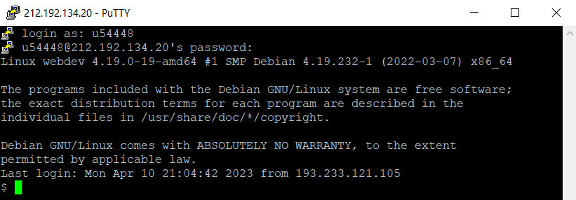
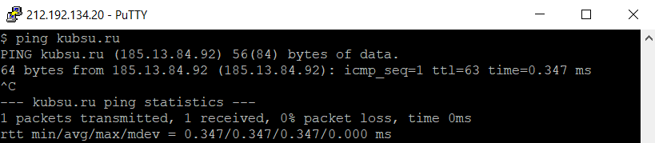
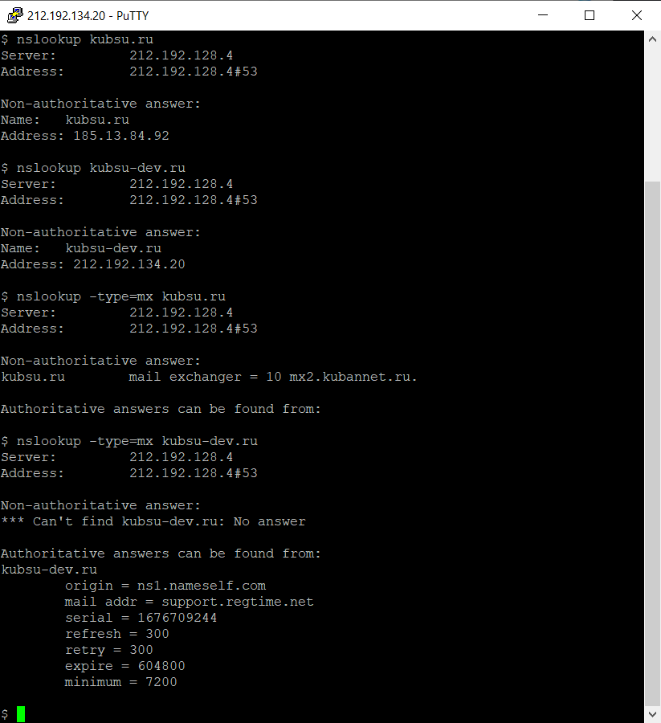
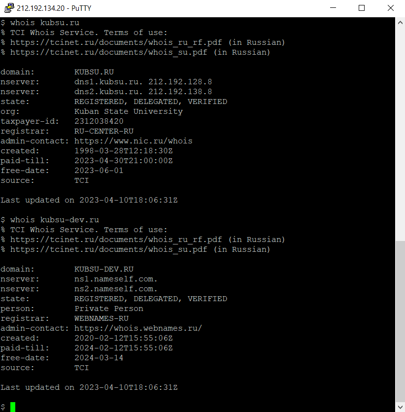
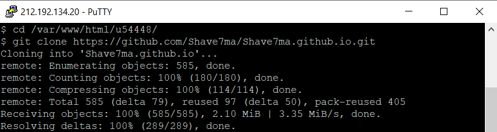
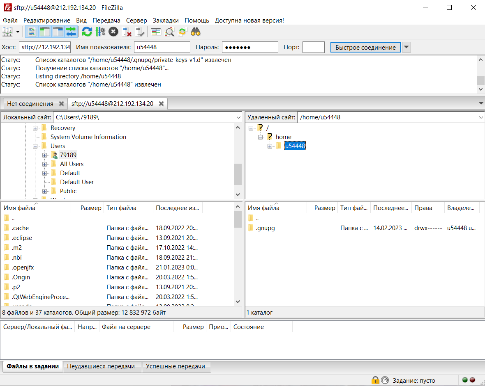
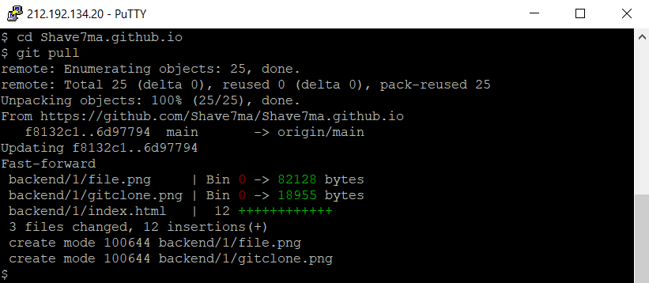

1. Подключился к учебному серверу kubsu-dev.ru:
2. С помощью команды ping узнал IP-адрес kubsu.ru:
3. С помощью команды nslookup узнал A- и MX- записи kubsu.ru и kubsu-dev.ru:
4. С помощью команды whois узнал дату регистрации kubsu.ru и kubsu-dev.ru:
5. Клонировал репозиторий:
Теперь веб-страница открывается по ссылке
6. С помощью FileZilla соединился с учебным сервером и скопировал на локальный компьютер файлы задания:
Финал: обновили копию репозитория с помощью команды git pull:
